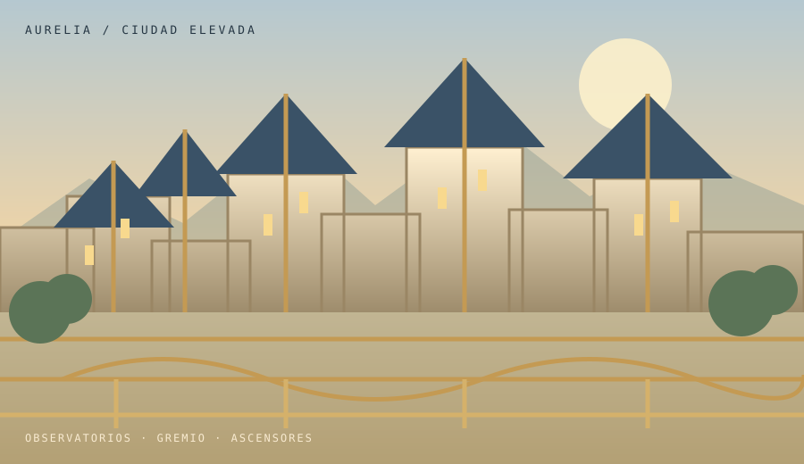

 Ciudad elevada
Ciudad elevada
Aurelia
Observatorios, gremios técnicos, pasarelas de cristal y ascensores de contrapesos. Desde sus terrazas el progreso luce impecable, aunque su coste no siempre salga en los informes del Consejo.
- Plaza del Archivo
- Terrazas del Observatorio
- Patio de Gremios
- Estación de Ascensores